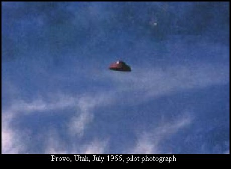

Dans la région de Helva, 6 Mystère 4 s'écrasent ensemble à quelques minutes de
vol de Palomares, plusieurs heures après le passage au-dessus de Fréjus
et du Var d'un énorme engin d'origine inconnue.
La photo déclarée comme prise depuis un C-47 à hauteur de Provo
(Utah)
À Provo (Utah) photographie d'une soucoupe depuis un C-47 Craig, R. F. & Levine, N. E.: "Case
7: Photos Allegedly Taken from C-47 Cockpit", Rapport Condon, 1968
Observation à Union (Pennsylvanie)Cas
Blue Book n° 10739 non résolu.
A Rebouillon (Var), à quelque distance de
Draguignan, les passagers d'une voiture observent à loisir un phénomène lumineux,
semblant muni de projecteurs, qui évolue au-dessus de la vallée de la Nartuby, s'immobilise, et
repart Marey, George: "Dans notre ciel et sur notre sol" in "Soucoupes
Volantes", Forces Aériennes Françaises (revue Mensuelle
de l'Armée de l'Air) n° 245, mars 1968.
Un officier de marine américain circule le soir avec son fils John. Un objet plane
au-dessus de la voiture : J'ai baissé la tête pour regarder à travers le parebrise, et je l'ai vu tout entier -
il était juste devant. J'ai dit à John : 'Mon dieu, c'est une soucoupe volante.' C'était presque comme les films
de science-fiction à la télévision... Il restait
suspendu là, absolument silencieux, comme un clocher d'église éclairé la nuit. Ou encore il ressemblait à ces
avions-suicides japonais qui se jetaient la nuit dans les faisceaux des projecteurs - cela me les a rappelés. Il a
viré sur 100 m environ - absolument comme s'il était dépité. 2 autres voitures arrivent et le mystérieux engin
va s'éteindre exactement comme un thermostat dans un appareil ménager, ne laissant plus alors qu'une ombre.
L'ovni disparapît dans un sillage bleuté.
Observation à
Vanceboro (Caroline du Nord)Cas Blue
Book n° 10781 non résolu.
Un drone D-21 est lancé au-dessus de Point Mugu, mais retourne vers le A-12 (#135) en le
détruisant. Les 2 membres d'équipage s'éjectent, mais l'un d'eux se noie avant d'être récupéré en mer. Tous les
lancements de D-21 seront à compter de ce jour effectués par des B-52 Peebles, Curtis: Dark
Eagles, Presido Press, 1995.
Aux environs de Montsoreau (Maine-et-Loire), M.
Lacoste (photographe à Saumur), ainsi que son épouse se
promènent quand ils aperçoivent une sphère rouge traverser le ciel. La lumière répandue par la sphère est si intense
qu'elle éclaire toute la campagne environnante. Elle paraît toucher le sol puis s'élever de nouveau, et planer à
mi-hauteur pendant quelque temps. Lacoste et sa femme, alors convaincu qu'il s'agit d'un engin militaire téléguidé,
s'approchent à une distance estimée à 300 m du phénomène, qui part et est perdu de vue derrière les bois.
L'observation a duré 4 mn. Le lendemain, Alain Rouillet
(fermier du même lieu), signale que son champ de blé a été aplati sur environ 8 m2 et recouvert d'une
substance huileuse et jaunâtre. Un contrôle sera fait pour savoir si des expériences militaires n'ont pas eu lieu à
cet endroit : il n'y en a eu
aucune Marey, George: "Dans notre ciel et sur notre sol" in "Soucoupes
Volantes", Forces Aériennes Françaises (revue Mensuelle
de l'Armée de l'Air) n° 245, mars 1968 < Vallée, J.: 1969.
Observation au parc national de
Presque Isle (Pennsylvanie)Cas Blue
Book n°
10798 non résolu.